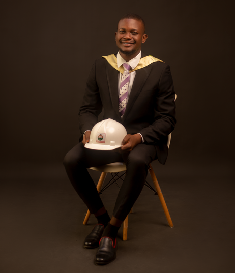

Ayoola Ayomide M.

Professional Summary
Civil Engineering graduate with intermediate skills in AutoCAD and foundational knowledge in web development.
Collaborative team player with strong problem-solving and
critical-thinking abilities, eager to contribute technical and interpersonal strengths to engineering or tech-focused roles.
Education
- Ladoke Akintola University of Technology, Ogbomoso,
Nigeria
Bachelor of Technology in Civil Engineering,
2019–2024
- Boladayo College, 2013–2019
- Boladayo Nursery and Primary School, 2005–2013
Work Experience
Student Intern, FBS Construction Company,
2024
- Assisted as a supporting site engineer during the construction of
a two-story service building for a hotel.
- Oversaw material
proportioning and ensured accurate mixing ratios for concrete batches.
Freelance Proofreader, Fiverr
2023–Present
- Provide detailed proofreading services for academic and business documents.
- Ensure clarity, grammar accuracy, and consistency for a diverse client base.
Skills
- AutoCAD (Intermediate)
- Teamwork & Collaboration
- Problem Solving & Critical Thinking
- Adaptability in Fast-Paced Environments
Other
© Ayoola Ayomide. All rights reserved.